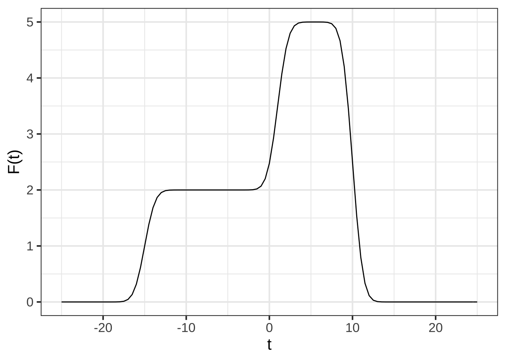
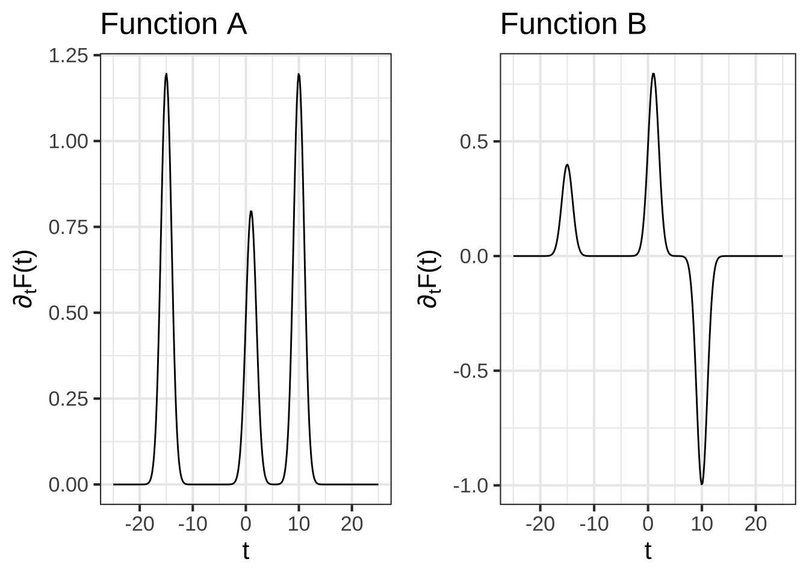
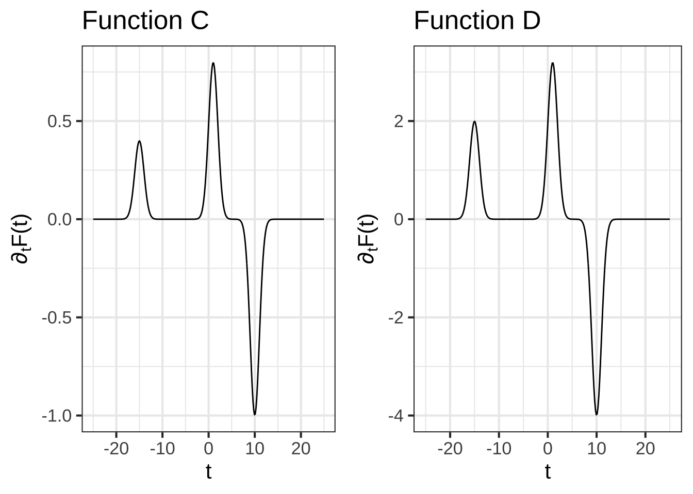
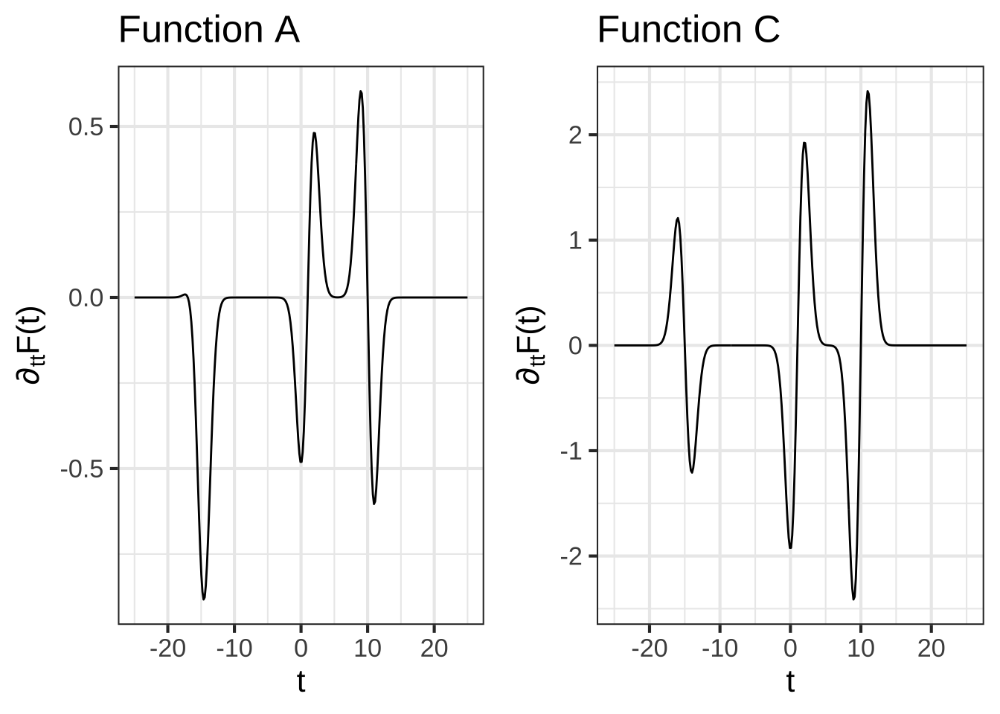
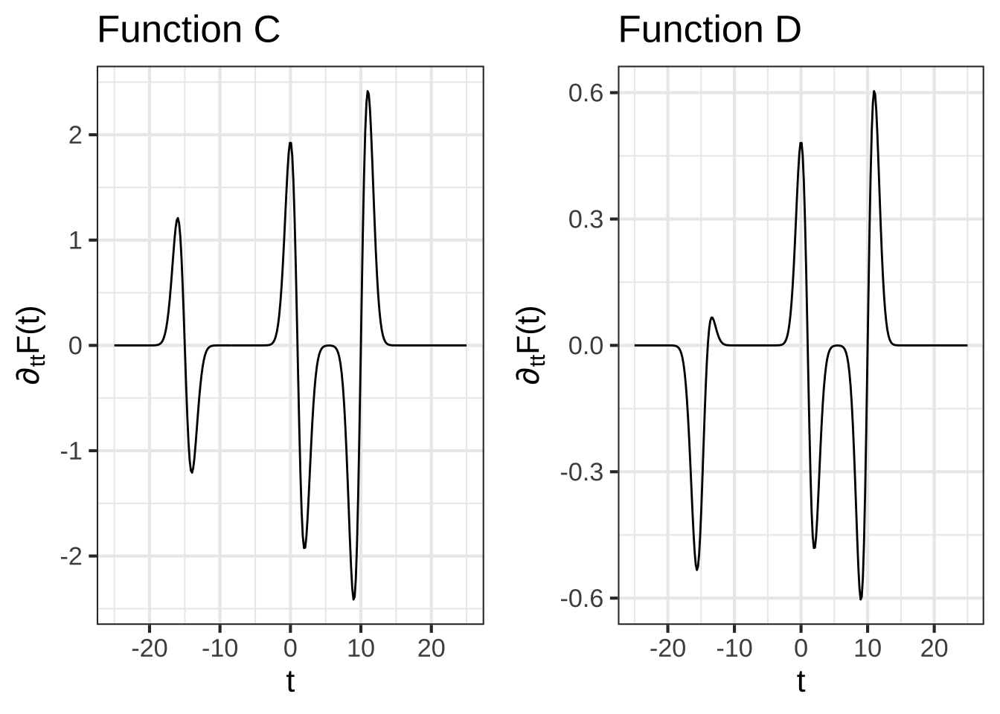
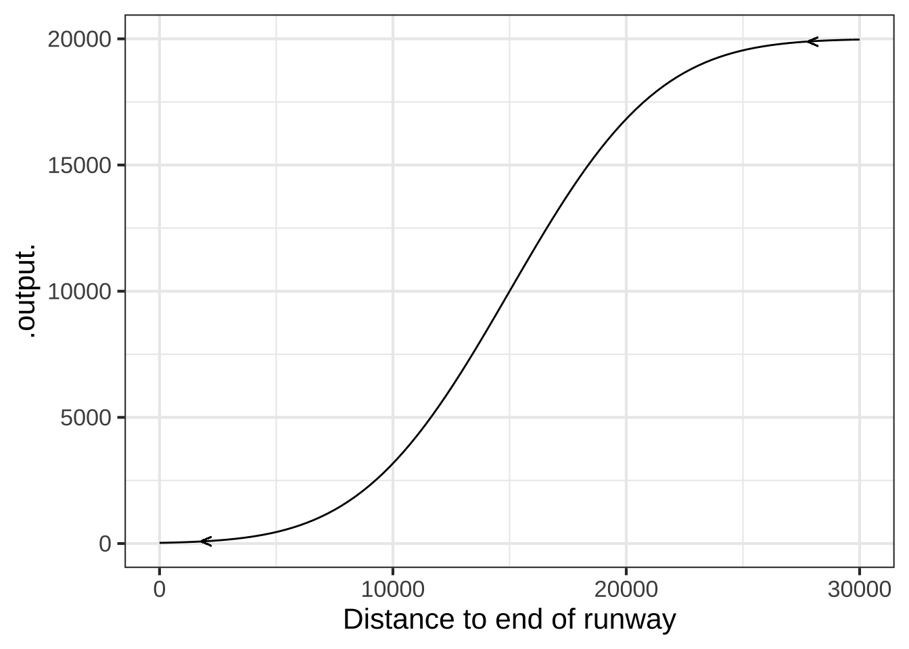
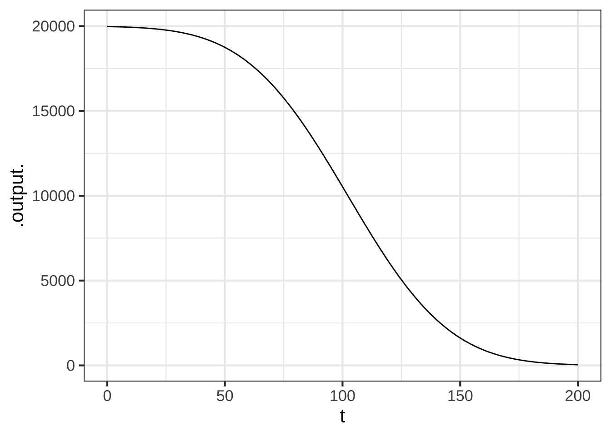
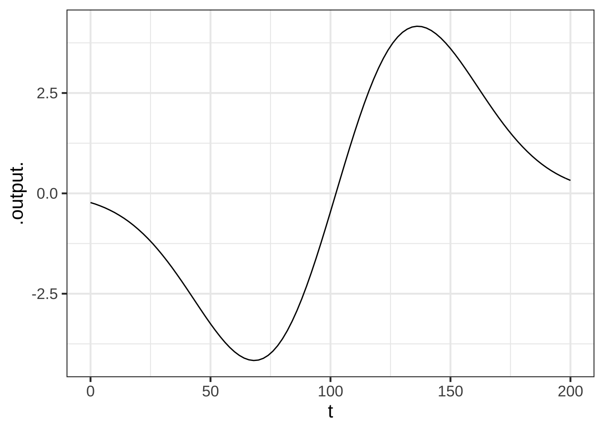
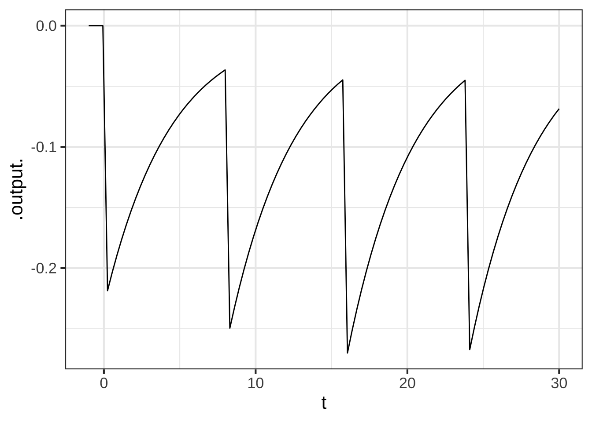

Chapter 22 Derivatives of assembled functions
In Section 19.4 we used the rules associated with \(\lim_{h\rightarrow 0}\) to confirm our claims about the derivatives of many of the pattern-book functions. We’ll call these rules h-theory for short. In this chapter, we’re going to use h-theory to find algebraic rules to calculate the derivatives of linear combinations of functions, products of functions, and composition of functions. Remarkably, we can figure out these rules without having to say specifically which functions are being combined. So the rules can be written in terms of abstractions: \(f()\), \(g()\), and \(h()\). Later, we’ll apply those rules to specific functions, to show how the rules are used in practical work.
22.1 Using the rules
When you encounter a function that you want to differentiate, you first have to examine the function to decide which rule you want to apply. In the following, we’ll to use the names \(f()\) and \(g()\), but in practice the functions will often be basic modeling functions, for instance \(e^{kx}\) or \(\sin\left(\frac{2\pi}{P}t\right)\), etc.
Step 1: Identify f() and g()
We will write the rules in terms of two function names, \(f()\) and \(g()\), which can stand for any functions whatsoever. It’s rare to see the product or the composition written explicitly as \(f(x)g(x)\) of \(f(g(x))\). Instead, you are given something like \(e^x \ln(x)\). The first step in differentiating the product or composition is to identify what are \(f()\) and \(g()\) individually.  2400
2400
In general, \(f()\) and \(g()\) might be complicated functions, themselves involving linear combinations, products, and composition. But to get started, we’ll practice with cases where they are simple, pattern-book functions. 2405
Step 2: Find f’() and g’()
For differentiating either products or compositions, you will need to identify both \(f()\) and \(g()\) (the first step) and then compute the derivatives \(\partial_x f()\) and \(\partial_x g()\). That is, you’ll write down four functions. 2410
Step 3: Apply the relevant rule
Recall from Chapter ?? that will will be working with three important forms for creating new functions out of existing functions:
- Linear combinations, e.g. \(a f(x) + bg(x)\)
- Products of functions, e.g. \(f(x) g(x)\)
- Compositions of functions, e.g. \(f\left(g(x)\right)\)
22.2 Differentiating linear combinations
Linear combination is one of the ways in which we make new functions from existing functions. As you recall, linear combination involves scaling functions and then adding the scaled functions as in \(a f(x) + b g(x)\), alinear combination of \(f(x)\) and \(g(x)\). We can easily use \(h\) to show what is the result of differentiating a linear combination of functions. First, let’s figure out what is \(\partial_x\, a f(x)\), Going back to writing \(\partial_x\) in terms of a slope function: \[\partial_x\, a\,f(x) = \frac{a\, f(x + h) - a\,f(x)}{h}\\ \ \\ = a \frac{f(x+h) - f(x)}{h} = a\, \partial_x f(x)\] In other words, if we know the derivative \(\partial_x\, f(x)\), we can easily find the derivative of \(a\, f()\). Notice that even though \(h\) was used in the derivation, it appears nowhere in the result \(\partial_x\, b\,f(x) = b\, \partial_x\, f(x)\). The \(h\) is solvent to get the paint on the wall and evaporates once its job is done.
Now consider the derivative of the sum of two functions, \(f(x)\) and \(g(x)\): \[\partial_x\, \left[f(x) + g(x)\right] =\\ \ \\ =\frac{\left[f(x + h) + g(x + h)\right] - \left[f(x) + g(x)\right]}{h} \\ \ \\ = \frac{\left[f(x+h) -f(x)\right] + \left[g(x+h) - g(x)\right]}{h}\\ \ \\ = \frac{\left[f(x+h) -f(x)\right]}{h} + \frac{\left[g(x+h) - g(x)\right]}{h}\\ \ \\ = \partial_x\, f(x) + \partial_x\, g(x)\]
Because of the way that \(\partial_x\) can be “passed through” a linear combination, mathematicians say that differentiation is a linear operator. Consider this new fact about differentiation as a down payment on what will eventually become a complete theory telling us how to differentiate a product of two functions or the composition of two functions. We’ll lay out the \(h\)-theory based algebra of this in the next two sections. 2390
We can summarize the h-theory result for linear combinations this way:
The derivative of a linear combination is the linear combination of the derivatives.
That is:
\[\partial_x \left[\strut \color{magenta}{a} \color{brown}{f(x)} + \color{magenta}{b} \color{brown}{g(x)}\right] = \color{magenta}{a} {\large\color{brown}{f'(x)}} + \color{magenta}{b} {\large\color{brown}{g'(x)}}\] as well as \[\partial_x \left[\strut \color{magenta}{a}\, \color{brown}{f(x)} + \color{magenta}{b}\, \color{brown}{g(x)} + \color{magenta}{c}\, \color{brown}{h(x)} + \cdots\right] = \color{magenta}{a}\, {\large\color{brown}{f'(x)}} + \color{magenta}{b}\, {\large\color{brown}{g'(x)}} + \color{magenta}{c}\, {\large\color{brown}{h'(x)}} + \cdots\]
Example 22.1 The derivative of a polynomial is a polynomial of a lower order.
Consider the polynomial \[h(x) = \color{magenta}{a}\color{brown}{x^0} + \color{magenta}{b} \color{brown}{x^1} + \color{magenta}{c} \color{brown}{x^2}\] The derivative is \[\partial_x h(x) = \color{brown}{0}\, \color{magenta}{a} + \color{brown}{1}\, \color{magenta}{b} + \color{magenta}{c}\, \color{brown}{2 x} = \color{magenta}{b} + \color{magenta}{2 c}\ x\]
22.3 Product rule for multiplied functions
The question at hand is how to compute the derivative \(\partial_x f(x) g(x)\). Of course, you can always use numerical differentiation. But let’s look at the problem from the point of view of symbolic differentiation. And since \(f(x)\) and \(g(x)\) are just pronoun functions, we’ll assume you are starting out already knowing the derivatives $_x f(x) \(\partial_x f(x)\) and \(\partial_x g(x)\).
This situation arises particularly when \(f(x)\) and \(g(x)\) are pattern-book functions for which you already have memorized \(\partial_x f(x)\) and \(\partial_x g(x)\) or are basic modeling functions whose derivatives you will memorize in Section 22.5.
The purpose of this section is to derive the formula for \(\partial_x f(x) g(x)\) in terms of \(f(x)\), \(g(x)\), \(\partial_x f(x)\) and \(\partial_x g(x)\). This formula is called the product rule. The point of showing a derivation of the product rule is to let you see how the logic of evanescent \(h\) plays a role. In practice, everyone simply memorizes the rule, which has a beautiful, symmetric form:
\[\text{Product rule:}\ \ \ \ \partial_x \left[\strut f(x)g(x)\right] = \left[\strut \partial_x f(x)\right]\, g(x) + f(x)\, \left[\strut\partial_x g(x)\right]\] and is even prettier in Lagrange notation (where \(\partial_x f(x)\) is written \(f'\)): \[ \left[\strut f g\right]' = f' g + g' f\]
As with all derivatives, the product rule is based on the instantaneous rate of change \[F'(x) \equiv \lim_{h\rightarrow 0} \frac{F(x+h) - F(x)}{h}\] introduced in Section 17.3.
We also need two other statements about \(h\) and functions:
- The derivative \(F'(x)\) is the slope of of \(F()\) at input \(x\). Taking a step of size \(h\) from \(x\) will induce a change of output of \(h F'(x)\), so \[F(x+h) = f(x) + h F'(x)\ .\]
- Any result of the form \(h F(x)\), where \(F(x)\) is finite, gives 0. More precisely, \(\lim_{h\rightarrow 0} h F(x) = 0\)
As before, we’ll put the standard \(\lim_{h\rightarrow 0}\) disclaimer against dividing by \(h\) until there are no such divisions at all, at which point we can safely use the equality \(h = 0\).
Suppose the function \(F(x) \equiv f(x) g(x)\), a product of the two functions \(f(x)\) and \(g(x)\).
\[\require{cancel} F'(x) = \partial_x \left[\strut f(x) g(x) \right] \equiv \lim_{h\rightarrow 0}\frac{f(x+h) g(x+h) - f(x) g(x)}{h}\] We’ll replace \(g(x_h)\) with its equivalent \(g(x) + h g'(x)\) giving
\[= \lim_{h\rightarrow 0} \frac{f(x+h) \left[\strut g(x) + h g'(x) \right] - f(x) g(x)}{h} \] \(g(x)\) appears in both terms in the numerator, once multiplied by \(f(x+h)\) and once by \(f(x)\). Collecting those terms give:
\[=\lim_{h\rightarrow 0}\frac{\left[\strut f(x+ h) - f(x)\right] g(x) + \left[\strut f(x+h) h\, g'(x)\right]}{h}\] This has two bracketed terms added together over a common denominator. Let’s split them into separate terms:
\[=\lim_{h\rightarrow 0}\underbrace{\left[\strut \frac{f(x+h) - f(x)}{h}\right]}_{f'(x)} g(x) + \lim_{h\rightarrow 0}\frac{\left[\strut f(x) + h f'(x)\right]h\,g'(x)}{h}\]
The first term is \(g(x)\) multiplied by the familiar form for the derivative of \(f(x)\) \[= f'(x) g(x) + \lim_{h\rightarrow 0}\frac{f(x) h g'(x)}{h} + \lim_{h\rightarrow 0}\frac{h f'(x) h g'(x)}{h}\] In each of the last two terms there is an \(h/h\) involved. This is safely set to 1, since the \(\lim_{h\rightarrow 0}\) implies that \(h\) will not be exactly zero. There remain no divisions by \(h\) so we can drop the \(\lim_{h\rightarrow 0}\) in favor of \(h=0\): \[= f'(x) g(x) + f(x) g'(x) + \cancel{h f'(x) g'(x)}\]
\[=f'(x) g(x) + g'(x) f(x)\]
The last step relies on statement (2) above.
Some people find it easier to read the rule in Lagrange shorthand, where \(f\) and \(g\) stand for \(f(x)\) and \(g(x)\) respectivly, and \(f'\) (“f-prime”) and \(g'\) (“g-prime”) stand for \(\partial f()\) and \(\partial g()\). 2415
\[\large\text{Lagrange shorthand:}\ \ \partial[\color{magenta}f \times \color{brown}g] = [\color{magenta}f \times \color{brown}g]' = \color{magenta}{f'}\color{brown}g + \color{brown}{g'}\color{magenta}f\]
Example 22.2 The expression \(\partial_x x^3\) is exactly the same as \(\partial_x \left[\strut x\ x^2\right]\). Since we already know \(\partial_x x\) (it’s 1) and \(\partial_x x^2\) (it’s \(2x\)) let’s apply the product rule to find \(\partial_x x^3\): \[\large\partial [\color{magenta}x \times \color{brown}{x^2}] = \color{magenta}{[\partial x]} \times \color{brown}{x^2} \ +\ \color{brown}{[\partial x^2]} \times \color{magenta}x =\color{magenta}1\times \color{brown}{x^2} + \color{brown}{2x} \times \color{magenta}x = 3 x^2\]
Occasionally, mathematics gives us a situation where being more general produces simplicity.
In the case of function products, the generalization is from products of two functions \(f(x)\cdot g(x)\) to products of more than two functions, e.g. \(u(x) \cdot v(x) \cdot w(x)\).
The chain rule here takes a form that makes the overall structure much clearer:
\[\partial_x \left[\strut u(x) \cdot v(x) \cdot w(x)\right] = \\ \color{blue}{\partial_x u(x)} \cdot v(x) \cdot w(x)\ +\ u(x) \cdot \color{blue}{\partial_x v(x)} \cdot w(x)\ +\ u(x) \cdot v(x) \cdot \color{blue}{\partial_x w(x)}\] In the Lagrange shorthand, the pattern is even more evident: \[\left[ u\cdot v\cdot w\right]' = \color{blue}{u'}\cdot v\cdot w\ +\ u\cdot \color{blue}{v'}\cdot w\ +\ u\cdot v\cdot \color{blue}{w}'\]
22.4 Chain rule for function composition
A function composition, as described in Section ??, involves inserting the output of one function (the “interior function”) as the input of the other function (the “exterior function”). As we so often do, we’ll be using pronouns a lot. A list might help keep things straight:
- There are two functions involved in a composition. We’ll call them \(f(y)\) and \(g(x)\). In the composition \(f(g(x))\), the exterior function is \(f()\) and the interior function is \(g()\).
- Each of the two functions \(f()\) and \(g()\) has an input. In our examples, we’ll use \(y\) to stand for the input to the exterior function and \(x\) as the pronoun for the input to the interior function.
- As with all rules for differentiation, we’ll need to compute the derivatives of the functions involved, each with respect to its own input. So these will be \(\partial_y f(y)\) and \(\partial_x g(x)\).
A reason to use different pronouns for the inputs to \(f()\) and \(g()\) is to remind us that the output \(g(x)\) is in general not the same kind of quantity as the input \(x\). In a function composition, the \(f()\) function will take the output \(g(x)\) as input. But since \(g(x)\) is not necessarily the same kind of thing as \(x\), why would we want to use the same name for the input to \(f()\) as we use for the input to \(g()\).
With this distinction between the names of the inputs, we can be even more explicit about the composition, writing \(f(y=g(x))\) instead of \(f(g(x))\). Had we used the pronound \(x\) for the input to \(f()\) but our explicit statement, although technically correct, would be confusing: \(f(x = g(x))\)!
With all these pronouns in mind, here is the chain rule for the derivative \(\partial_x f(g(x))\):
\[\large\partial_x \left[\strut \color{magenta}{f\left(\strut\right.}\strut \color{brown}{g(x)}\color{magenta}{\left.\right)}\right] = [\color{magenta}{\partial_y f}](\color{brown}{g(x)}) \times [\color{brown}{\partial_xg(x)}]\] Or, using the Lagrange prime notation, where \('\) stands for the derivative of a function with respect to its input, we have \[\large\text{Lagrange shorthand:}\ \ [\color{magenta}f(\color{brown}g)]' = \color{magenta}{f'} (\color{brown}g) \times \color{brown}{g}'\]
In news and policy discussions, you will often hear about “inflation rate” or “birth rate” or “interest rate” or “investment rate of return.” In each case, there is a function of time combined with a derivative of that function: with the general form \[\frac{\partial_t f(t)}{ f(t)}\ .\]
- Inflation rate: The function is cost_of_living(\(t\)). The derivative is the rate of change with respect to time in the cost of living: \(\partial_t\,\)cost_of_living(\(t\)).
- Birth rate: The function is population(\(t\)). The derivative is \(\partial_t\,\)population(\(t\)), or at least that component of the overall \(\partial_t\,\)population(\(t\)) that is related to births. (Other components are deaths and the balance of in-migration and out-migration.)
- Interest rate: The function is account_balance(\(t\)) and the derivative is \(\partial_t\,\)account_balance(\(t\)).
- Investment returns: The function is net_worth(\(t\)) and the derivative is \(\partial_t\,\)net_worth(\(t\)).
In all these cases, The “rate” is not merely “per time” as would be the case for \(\partial_t f(t)\). Instead the rate is “per unit of the whole per time.” Thus the birth rate is “births per capita per year.”12 Interest and return rates are “percent per year” where the “percent” understood to be the “change-in-value divided by the current value.”
Thanks to the chain rule, there is a shortcut way of writing these sorts of “rates per time.” Exactly equivalent to the ratio \(\frac{\partial_t f(t)}{ f(t)}\) is \[\partial_t \ln(f(t))\ .\]
Such changes in logarithms are encountered in fields such as economics or finance, where it’s common to consider the logarithm of the economic quantity in order to render changes as percent of the whole.
It’s also something to keep in mind when interpreting graphs of an amount versus time, as in Figure @ref{fig:italy-us-covid}. Source
Figure 22.1: Growth in the number of Coronavirus cases in Italy and the US early in the pandemic.
Look closely at the two graphs in Figure 22.1. They show exactly the same data about growing numbers of coronavirus cases, the left graph on linear axes, the right on the now-familiar semi-log axes.
Most people are excellent at comparing slopes, even if they find it difficult or tedious to quantify a slope with a number and units. For instance, a glance suffices to show that in the left graph, well through mid-March the red curve (Italy) is steeper on any given date than the blue curve (US). This means that the number of people with coronavirus was growing faster (per day) in Italy.
The right graph tells a different story: up until about March 1, the Italian cases were increasing faster than the US cases. Afterwards, the US sees a larger growth rate than Italy until, around March 19, the US growth rate is substantially larger than the Italy growth rate.
The previous two paragraphs and their corresponding graphs may seem to contradict one another. But they are both accurate, truthful depictions of the same events. What’s different between the two graphs is that the left shows one kind of rate and the right shows another kind of rate. In the left, the slope is new-cases-per-day, the output of the derivative function \[{\mathbf{\text{left graph:}}} \ \ \ \ \partial_t \text{daily_new_cases}(t)\ .\] On the right, the slope is the proportional increase in cases per day, that is, \[{\mathbf{\text{right graph:}}}\ \ \ \ \frac{\partial_t \text{daily_new_cases}(t)}{\text{daily_new_cases}(t)}\] From the chain rule, we know that \[\partial_t \left[\strut\ln(f(t))\right] = \frac{\partial_t f(t)}{f(t)}\] Since the right graph is on semi-log axes, the slope we perceive visually is \(\partial_t \left[\strut\ln(f(t))\right]\). That’s an obscure-looking bunch of notation until the chain rule reveals it to be the rate of change at time \(t\) divided by the value at time \(t\).
The derivation of the chain rule relies on two closely related statements which are expressions of the idea that near any value \(x\) a function can be expressed as a linear approximation with the slope equal to the derivative of the function :
- \(g(x + h) = g(x) + h g'(x)\)
- \(f(y + \epsilon) = f(y) + \epsilon f'(y)\), which is the same thing as (1) but uses \(y\) as the argument name and \(\epsilon\) to stand for the small quantity we usually write with an \(h\).
We’ll now look at \(\partial_x f\left({\large\strut} g(x)\right)\) by writing down the fundamental definition of the derivative. This, of course, involves the disclaimer \(\lim_{h\rightarrow 0}\) until we’re sure that there is no division by \(h\) involved.
\[\partial_x \left[{\large\strut} f\left(\strut g(x)\right)\right] \equiv \lim_{h\rightarrow 0}\frac{\color{magenta}{f(g(x+h))} - f(g(x))}{h}\]
Let’s examine closely the expression \(\color{magenta}{f\left(\strut g(x+h)\right)}\). Applying rule (1) above turns it into \[\lim_{h\rightarrow 0} f\left(\strut g(x) + \color{blue}{h g'(x)}\right)\]
Now apply rule (2) but substituting in \(g(x)\) for \(y\) and \(\color{blue}{h g'(x)}\) for \(\epsilon\), giving
\[\lim_{h\rightarrow 0} \color{magenta}{f\left(\strut g(x+h)\right)} = \lim_{h\rightarrow 0} \color{brown}{\left[{\large\strut} f\left(g(x)\right) + \color{blue}{h g'(x)}f'\left(g(x)\right)\right]}\]
We’ll substitute the \(\color{blue}{blue}\) and \(\color{brown}{brown}\) expression for the \(\color{magenta}{magenta}\) expression in
\[\partial_x f\left(\strut g(x)\right) \equiv \lim_{h\rightarrow 0}\frac{\color{magenta}{f(g(x+h))} - f(g(x))}{h}\] giving
\[\partial_x f\left(\strut g(x)\right) \equiv \lim_{h\rightarrow 0}\frac{\color{brown}{f\left(g(x)\right) + \color{blue}{h g'(x)}f'\left(g(x)\right)} - f\left(g(x)\right)}{h}\]
In the denominator, \(f\left(g(x)\right)\) appears twice and cancels itself out. That leaves a single term with an \(h\) in the numerator and an \(h\) in the denominator. Those \(h\)’s cancel out, at the same time obviating the need for \(\lim_{h\rightarrow 0}\) and leaving us with the chain rule:
\[\partial_x f\left(\strut g(x)\right) \equiv \lim_{h\rightarrow 0}\frac{\color{brown}{ \color{blue}{h g'(x)} f'\left(g(x)\right)}}{h} = f'\left(g(x)\right)\ g'(x)\]
Example 22.3 Use the chain rule to find the derivative \(\partial_x e^{2x}\).
Recognize that \(g(x) \equiv 2x\) is the interior function in \(e^{2x}\) and \(f(x) \equiv \exp(x)\) is the exterior function. Thus \[\partial_x e^{2x} = f'(g(x)) g'(x) = \exp(g(x)) 2 = 2 e^{2x}\ .\] Happily, this is exactly the same result as we got from using the product rule to find \(\partial_x e^{2x}\).
Recognizing \(e^{2x}\) as \(e^x \times e^x\), we can apply the product rule.
Example 22.4 The chain rule can be used in a clever way to find a formula for \(\partial_x \ln(x)\).
We’ve already seen that the logarithm is the inverse function to the exponential, and vice versa. That is: \[e^{\ln(y)} = y \ \ \ \text{and}\ \ \ \ln(e^y) = x\] Since \(\ln(e^y)\) is the same function as \(y\), the derivative \(\partial_y \ln(e^y) = \partial_y y = 1\).
Let’s differentiate the second form using the chain rule: \[\partial_y \ln(e^y) = \left[\partial_y \ln\right](e^y)\, e^x = 1\] giving \[\left[\partial_y \ln\right](e^y) = \frac{1}{e^y} = \recip(e^y)\] Whatever the function \(\partial_x \ln()\) might be, it takes its input and produces as output the reciprocal of that input. In other words: \[\partial_x \ln(x) = \frac{1}{x}\ .\]
Example 22.5 Knowing that \(\partial_x \ln(x) = 1/x\) and the chain rule, we’re in a position to demonstrate the power-law rule \(\partial_x x^p = p\, x^{p-1}\). The key is to use the identity \(e^{\ln(x)} = x\).
\[\partial_x x^p = \partial_x \left[e^{\ln(x)}\right]^p\] The rules of exponents allow us to recognize \[\left[e^{\ln(x)}\right]^p = e^{p \ln(x)}\] Thus, \(x^p\) can be seen as a composition of the exponential function onto the logarithm function.
Applying the chain rule to this composition gives \[\partial_x e^{p \ln(x)} = e^{p\ln(x)}\partial_x [p \ln(x)] = e^{p\ln(x)} \frac{p}{x}\ .\] Of course, we already know that \(e^{p \ln(x)} = x^p\), so we have \[\partial_x x^p = x^p \frac{p}{x} = p x^{p-1}\ .\]
- \(\large\partial_x [\color{brown}\sin(\color{magenta}{a x + b})] = [\partial_x \color{brown}{\sin}](\color{magenta}{a x + b}) \times \partial_x [\color{magenta}{ax + b}] = \color{brown}{\cos}(\color{magenta}{ax + b}) \times \color{magenta}a\).
In 1734, famous philosopher George Berkeley (1685-1753) published a long-titled book: The Analyst: A Discourse Addressed to an Infidel Mathematician: Wherein It Is Examined Whether the Object, Principles, and Inferences of the Modern Analysis Are More Distinctly Conceived, or More Evidently Deduced, Than Religious Mysteries and Points of Faith. In The Analyst, Berkeley took issue with the arguments of that time that it is legitimate to divide by \(h\) when, ultimately, \(h\) will be replaced by zero. Calling \(h\) an “evanescent increment,” he asked, 2392
“And what are these same evanescent Increments? They are neither finite Quantities nor Quantities infinitely small, nor yet nothing. May we not call them the ghosts of departed quantities?”
Interesting, Berkeley believed that the ghost of \(h\) yielded correct results. His objection was that the framers of calculus had made two, canceling errors.
“[B]y virtue of a two fold mistake you arrive, though not at science, yet truth.”
Berkeley was saying that calculus had not yet been put on a solid logical foundation. It wasn’t until more than a century after Berkeley’s death that this work was accomplished. Once accomplished, the results that had been claimed true all along were confirmed. 2394
22.5 Derivatives of the basic modeling functions
The basic modeling functions are the same as the pattern-book functions, but with bare \(x\) replaced by \(\line(x)\). In other words, each of the basic modeling functions is a composition of the corresponding pattern-book function with \(\line(x)\). As such, the derivatives of the basic modeling functions can be found using the chain rule.
Suppose \(f()\) is one of our pattern-book functions. Then \[\large\partial_x f(\color{magenta}{ax + b}) = \color{brown}{a} f'(\color{magenta}{ax + b})\] where \(\color{brown}{a}\) is the derivative with respect to \(x\) of \(\color{magenta}{ax + b}\).
Here are the steps for differentiating a basic modeling function \(\color{brown}{f}(\color{magenta}{a x + b})\) where \(f()\) is one of the pattern-book functions:
- Step 1: Identify the particular pattern-book function \(\color{brown}{f}()\) and write down its derivative \(\color{brown}{f'}\). For example, if \(f()\) is \(\sin()\), then \(f'()\) is \(\cos()\).
- Step 2: Find the derivative of the linear interior function. If the function is \(\color{magenta}{ax + b}\), then the derivative is \(\color{magenta}{a}\). If the interior function is \(\frac{2\pi}{P}(t-t_0)\), the derivative is \(\frac{2 \pi}{P}\).
- Step 3: Write down the original function \(\large\color{brown}{f}(\color{magenta}{a x + b})\) but replace \(\large\color{brown}{f}\) with \(\large \color{brown}{f'}\) and pre-multiply by the derivative of the interior function. For instance, \[\partial_x f(\color{magenta}{ax + b}) = {\large \color{magenta}{a}}{\large f'}(\color{magenta}{ax + b})\] Another example: \[\partial_t \color{brown}{\sin}\left(\color{magenta}{\frac{2 \pi}{P}(t-t_0)} \right) = {\large \color{magenta}{\frac{2 \pi}{P}}}\color{brown}{\large\cos}\left(\color{magenta}{\frac{2 \pi}{P}(t-t_0) }\right) \]
By convention, there are different ways of writing \(\line(x)\) for the different pattern-book functions, for instance: 2396
\[\text{Pattern-book function} \ \ \ \longrightarrow\ \ \ \text{Basic modeling function}\\ \ \\ \sin(x)\ \ \ \longrightarrow\ \ \ \sin\left(\strut2 \pi \left[x-x_0\right]/P\right)\\ \exp(x)\ \ \ \longrightarrow\ \ \ \exp(k x)\\ x^2 \ \ \ \longrightarrow\ \ \ \left[mx + b\right]^2\\ 1/x \ \ \ \longrightarrow\ \ \ 1/\left[mx + b\right]\\ \ln(x) \ \ \ \longrightarrow\ \ \ \ln(a x + b)\\\]
The rule for the derivative of any basic modeling function \(f(\line(x))\) is \[\partial_x f(\line(x)) = \partial_x \line(x) \times \partial_x f\left(\strut\line(x)\right)\]
To illustrate:
- \(\partial_x e^{\color{magenta}{kx}} = {\large\color{magenta}{k}}\, e^{\color{magenta}{kx}}\) where \(\line(x) = kx\).
- \(\partial_x \sin(2\pi (x-x_0)/P) = \frac{2\pi}{P} \sin(2\pi (x-x_0)/P)\) where \(\line(x) = 2\pi (x-x_0)/P)\).
- \(\partial_x (mx + b)^2 = m\, 2 (m x + b) = 2 m^2 x + m^2 b\) where \(\line(x) = mx + b\).
- \(\partial_x \text{reciprocal}(mx + b) = \partial_x \frac{1}{mx + b} = - \frac{m}{(mx + b)^2}\) where \(\line(x) = mx + b\) and we use the fact that \(\partial_x \text{reciprocal}(x) = - 1/x^2\)
- \(\partial_x \ln(a x + b) = a/(ax+b)\)
- \(\partial_x \pnorm(x, \text{mean}, \text{sd}) = dnorm(x, \text{mean}, \text{sd})\).
- \(\partial_x \dnorm(x, \text{mean}, \text{sd}) = - \frac{x-m}{\text{sd}^2} \dnorm(x, \text{mean}, \text{sd})\)
You will be using the derivatives of the basic modeling functions so often, that you should practice and practice until you can write the derivative at a glance.
There are many possible implementations of the general concept of hump functions and sigmoidal functions. The one we use in this book is \(\dnorm()\) for the hump and \(\pnorm()\) for the sigmoid.
The names \(\dnorm\) and \(\pnorm\) are worth remarking on. As we’ve said before, \(\dnorm()\) is called the gaussian function in many fields of science and engineering. It is also a centrally important function in statistics, where it is usually called the normal function. (That’s how important it is: it’s just “normal.”) You may also have heard the normal function described as a “bell-shaped curve.”
In statistical nomenclature, \(\dnorm()\) is called the “normal probability density function (PDF)” and \(\pnorm()\) is called the “normal cumulative density function (CDF).” That’s way too wordy for our purposes. So, for brevity, we have adopted the R name for those functions: dnorm() and pnorm().
Owing to the origin of the names \(\dnorm\) and \(\pnorm\), we are writing the parameters of the functions—mean and sd—using the computer language notation. The pattern-book functions are just \(\dnorm(x)\) and \(\pnorm(x)\), without listing the parameters. But the basic modeling functions, with parameters, are written \(\dnorm(x, \text{mean}, \text{sd})\) and \(\dnorm(x, \text{mean}, \text{sd})\). This violates the convention that the basic modeling functions are the composition of the pattern-book functions with \(\line(x)\). But \(\dnorm()\) doesn’t actually work this way because, by convention, the amplitude of the peak of \(\dnorm()\) changes with the input parameter sd. That’s not true for any other basic modeling function.
Composition or product?
There is one family of functions for which function composition is the same thing as multiplying functions: the power-law family.
Consider, for instance, the function \(h(x) \equiv \left[3x\right]^4\). Let’s let \(g(x) \equiv 3x\) and \(f(y) \equiv y^4\). With these definitions, \(h(x) = f(g(x))\).
Recognizing that \(\partial_y f(y) = 4 y^3\) and \(\partial_x g(x) = 3\), the chain rule gives \[\partial_x h(x) = \underbrace{4 g(x)^3}_{f'(g(x))} \times \underbrace{3}_{g'(x)} = \underbrace{4 (3 x)^3}_{f'(g(x))} \times 3 = 4\cdot 3^4 \times x^3 = 324\ x^3\] Another way to look at the same function is \(g(x)\) multiplied by itself 3 times: \[h(x) = g(x)\cdot g(x) \cdot g(x) \cdot g(x)\] This is a product of 4 terms. Applying the product rule gives \[\partial_x h(x) = \ \ \ \ \ \ \ \ \ \ \ \ \ \ \ \ \ \ \ \ \ \ \ \ \ \ \ \ \ \ \ \ \ \ \ \ \\\color{blue}{g'(x)}\cdot g(x)\cdot g(x) \cdot g(x) +\\ g(x)\cdot \color{blue}{g(x)}'\cdot g(x) \cdot g(x) +\\ g(x)\cdot g(x)\cdot \color{blue}{g(x)'} \cdot g(x) +\\ g(x)\cdot g(x)\cdot g(x) \cdot \color{blue}{g'(x)}\ \ \ \ \] Since multiplication is commutative, all of these four terms are the same, each being \(3^4 x^3\). The sum of all four is therefore \(4 \times 3^4 x^3 = 324 x^3\).
These are two long-winded ways of getting to the result. For most people, differentiating power-law functions algebraically is simplified by using the rules of exponentiation rather than the product or chain rule. Here, \[h(x) \equiv \left[3x\right]^4 = 3^4 x^4\]so \(\partial_x h(x)\) is easily handled as a scalar (\(3^4\)) times a function \(x^4\). Consequently, applying the rule for differentiating power laws, \[\partial_x h(x) = 3^4 \times \partial_x x^4 = 3^4 \times 4 x^3 = 324 x^3\] As another example, take \(h(x) \equiv \sqrt[4]{\strut x^3}\). This is, of course, the composition \(f(g(x))\) where \(f(y) \equiv y^{1/4}\) and \(g(x) \equiv x^3\). Applying the chain rule to find \(\partial_x h(x)\) will work (of course!), but is more work than applying the rules of exponentiation followed by a simple power-law differentiation. \[h(x) = \sqrt[4]{\strut x^3} = x^{3/4}\ \ \text{so}\ \ \partial_x h(x) = \frac{3}{4} x^{(3/4 - 1)} = \frac{3}{4} x^{-1/4}\]
22.6 Exponentials and logarithms (optional)
The natural logarithm function, \(\ln(x)\), is one of our basic modeling functions. As you know, there are other logarithmic functions. The one most often used is the logarithm-base-10, written \(\log_{10}(x)\) or log10(x). Ten is an integer, and a nice number to use in arithmetic. So in practice, it’s sensible to use \(\log_{10}()\). (Indeed, \(\log_{10}()\) is the digit() function, introduced in Chapter ??.
The “natural” in the “natural logarithm” means something different. 2430
The base of the natural logarithm is the number called Euler’s constant and written \(e\). As a celebrity number, \(e\) is right up there with \(\pi\) and \(i\). Just as \(\pi\) has a decimal expansion that is infinitely long, the familiar \(\pi = 3.14159265358979...\), Euler’s constant has an infinitely long decimal representation: \(e = 2.71828182845905...\) 2435
It’s not obvious at first glance why \(e = 2.71828182845905...\) should be called “natural” by mathematicians. The reason is not the number itself, but
- \(\ln(x)\) is the inverse of \(e^x\), which is special for being invariant under differentiation: \(\partial_x e^x = e^x\).
- The derivative \(\partial_x \ln(x)\) which has a particularly simple form, namely, \(1/x\).
Let’s look at the log-base-10 and it’s computer-savvy cousin log-base-2. The very definition of logarithms means that both 10 and 2 can be written \[10 = e^{\ln(10)}\ \ \ \text{and}\ \ \ 2 = e^{\ln(2)}\] This implies that the base-10 and base-2 exponential functions can be written
\[10^x = \left[\strut e^{\strut\ln(10)}\right]^x = e^{\ln(10)x} \ \ \ \text{and}\ \ \ 2^x = \left[\strut e^{\strut\ln(2)}\right]^x = e^{\ln(2) x}\] Calculating \(\partial_x 10^x\) or \(\partial_x 2^x\) is a matter of applying the chain rule:
\[\partial_x [10^x] = \partial_x [e^{\ln(10)x}] = e^{\ln(10)x} \times \ln(10) \ =\ 10^x \times 2.3026\] and \[\partial_x [2^x] = \partial_x [e^{\ln(2)x}] = e^{\ln(2)x} \times \ln(2) \ = \ 2^x \times 0.6931\] Like \(e^x\), the derivatives of \(10^x\) and \(2^x\) are proportional to themselves. For \(e^x\) the constant of proportionality is 1, a very natural number indeed.
22.7 Exercises
Exercise 22.01: jYXYTF
Section 22.1 explains that in differentiating a linear combination of two functions, or a product of two functions, or one function composed with another, your first task is to identify the two functions \(f()\) and \(g()\) involved. Second, compute the derivative of each of those functions on its own: \(\partial_x f(x)\) and \(\partial_x g(x)\).
Carry out these two tasks for each of the combined functions shown in the table. (The first row has been done for you as an example.)
| Combination | \(f()\) | \(g()\) | \(\partial_x f()\) | \(\partial_x g()\) |
|---|---|---|---|---|
| \(e^x \ln(x)\) | \(\ln(x)\) | \(e^x\) | \(\recip\) (that is \(1/x\)) | \(e^x\) |
| \(sin(e^x)\) | ||||
| \(x + x^2\) | ||||
| \(1/\sin(x)\) | ||||
| \(\pnorm(x)^2\) | ||||
| \(\sqrt{\pnorm(x)}\) | ||||
| \(\pnorm(x^2)\) | ||||
| \(pnorm(sin(x))\) |
Exercise 22.02: 3ICCCz
For each of the following, say whether the function is a composition \(f(g(x))\) or a product \(f(x) g(x)\), or neither.
Question A What sort of combination is \(h_1(x)\equiv \ln(x) e^x\)?
product\(\heartsuit\ \) composition︎✘ neither︎✘
Question B What sort of combination is \(h_2(x)\equiv \sin(x) \cos(x)\)?
product\(\heartsuit\ \) composition︎✘ neither︎✘
Question C What sort of combination is \(h_3(x) \equiv \sin(\ln(x))\)?
product︎✘ composition\(\heartsuit\ \) neither︎✘
Question D What sort of combination is \(h_4(x) \equiv e^{\ln(x)}\)?
product︎✘ composition\(\heartsuit\ \) neither︎✘
Question E What sort of combination is \(h_5(x) \equiv \sin(x) - \dnorm(x)\)?
product︎✘ composition︎✘ neither\(\heartsuit\ \)
Question F What sort of combination is is \(h_6(x) \equiv e^{x^2}\)?
product︎✘ composition\(\heartsuit\ \) neither︎✘
Question G What sort of combination is \(h_7(x) \equiv \pnorm(x^2)\)?
product︎✘ composition\(\heartsuit\ \) neither︎✘
Question H What sort of combination is \(h_8(x) \equiv \pnorm(x) \dnorm(x)\)?
product\(\heartsuit\ \) composition︎✘ neither︎✘
Question I What sort of combination is \(h_9(x) \equiv 1/\sin(x)\)?
- product︎✘
- compositionNice! Remember, \(1/\sin(x)\) is the same as \(\recip(\sin(x))\).
- neither︎✘
Exercise 22.03: JvtMuz
Consider this function, \(F(t)\), which is a linear combination of three time-shifted sigmoids.
 As you know, the derivative of a sigmoid \(\text{pnorm}(t)\) is a gaussian with the same center and standard deviation.
Question A How many gaussians will be in \(\partial_t F(t)\).
2︎✘ 3\(\heartsuit\ \) 6︎✘ none︎✘
The following figure shows several functions. One of them is \(\partial_t F(t)\).

Question B Which function is the actual derivative of \(F(t)\)? (Hints: The vertical axis is important as is the value of \(\text{dnorm}(0)\).)
A︎✘ B︎✘ C︎✘ D\(\heartsuit\ \)

Question C Which function is the actual second derivative of \(F(t)\)? (Hints: The vertical axis is important as is the value of \(\text{dnorm}(0)\).)
- A︎✘ The problem is with the first event.
- B︎✘ The first and second events go in the same direction. The third event is not as big as the second.
- CGood.
- D︎✘ The first event isn’t the second derivative of a sigmoid.
Exercise 22.04: QFzIOl
In function compositions of the form \(f\left(\strut g(x)\right)\), the function \(f()\) is called the exterior function and \(g()\) is called the interior function.
Question A In \(\cos(\ln(x))\) which is the interior function?
- \(\ln()\)Nice!
- \(\cos()\)︎✘ This is the exterior function.
- \(\sin()\)︎✘ Sine has nothing to do with it!
- None of the above︎✘
- It’s not a function composition︎✘
Question B In \(1/\sin(x)\) which is the exterior function?
- \(\recip()\)Excellent!
- \(\cos()\)︎✘
- \(\sin()\)︎✘ This is the interior function.
- None of the above︎✘
- It’s not a function composition︎✘
Question C In \(\sin\left(\frac{2 \pi}{P} (t-t_0)\right)\) which is the exterior function?
- \(t-t_0\)︎✘
- \(\frac{2\pi}{P}\)︎✘
- \(\frac{2\pi}{P} t\)︎✘
- \(\frac{2\pi}{P} (t-t_0)\)︎✘
- \(\sin()\)Nice!
- None of the above︎✘
- It’s not a function composition︎✘
Question D In \(\sin\left(2 \pi (t-t_0)/P\right)\) which is the interior function?
- \(t-t_0\)︎✘ That’s part of it.
- \(2\pi /P\)︎✘ That’s part of it.
- \(2\pi t /P t\)︎✘ That’s part of it.
- \(2\pi (t-t_0)/P\)Correct.
- \(\sin()\)︎✘ This is the interior function.
- None of the above︎✘
- It’s not a function composition.︎✘
Question E In \(\sin(x)\dnorm(x^2)\), which is the interior function?
\(x^2\)︎✘ \(x\)︎✘ \(\dnorm(x^2)\)︎✘ None of the above︎✘ It’s not a function composition.\(\heartsuit\ \)
Exercise 22.06: QIELS
Compare the functions \(f_1 \equiv \dnorm(x, mn, sd)\) and \(f_2 \equiv \dnorm\left(\left[x-mn\right]/sd\right)\) by plotting them out in a SANDBOX.
In order to construct the plot, you’ll have to pick specific values for \(mn\) and \(sd\). Make sure that you use the same \(sd\) and \(mn\) when constructing \(f_1()\) and \(f_2()\). For instance:
f1 <- makeFun(dnorm(x, mn, sd) ~ x, mn=2, sd=3)
f2 <- makeFun(dnorm( (x-mn) / sd) ~ x, mn=2, sd=3)Question A When \(\text{sd} = 1\), are the two functions the same?
Yes\(\heartsuit\ \) Yes, but only if \(\text{mn}=1\)︎✘ Yes, but only if \(\text{mn}=0\)︎✘ No︎✘
Question B When \(\text{sd} \neq 1\), for any given mean, the two functions are not the same. What’s the relationship between \(f_1(x)\) and \(f_2(x)\)?
- \(f_2(x) = sd\, f_1(x)\)Good.
- \(f_1(x) = sd\, f_2(x)\)︎✘
- \(f_1(x) = sd^2 f_2(x)\)︎✘
- \(f_2(x) = sd^2 f_1(x)\)︎✘
Exercise 22.08: HCILW
Pilots of commercial passenger aircraft consider the comfort of their passengers into account when flying. In transitioning from level flight onto the descent path for landing, for example, pilots take care that the vertical component of acceleration isn’t so great that passengers feel the plane “falling out from under them.”
A simple model of the descent path is a sigmoid function. Suppose that the descent starts from an altitude of \(A = 20,000\) feet at a distance of 30,000 feet from the end of the runway. A reasonable model for the vertical component of the flight path is \[\text{altitude}(x) \equiv A\,\pnorm(x,\ \ mn=30000/2,\ \ sd=30000/6)\] Notice that the parameter “mean” is set to be half the distance to the runway, and the parameter “sd” is set to be a third of that. This ensures that the start and end of the descent will involve flight that is close to level.

The vertical acceleration is the second derivative of alt() with respect to time: \(\partial_{tt} \text{altitude}(t)\). But notice that alt() is a function of distance from the runway, not time.
In order to treat alt() as a function of time, we need to write “distance from the runway” as a function of time. Let’s set \(t=0\) to be the time when the plane begins its descent, when it’s 30,000 feet from the end of the runway. Distance from the runway will be \[x(t) = 30000 - v\, t\] where \(v\) is the plane’s velocity. Composing altitude() onto \(x(t)\) gives a new function \[\text{alt}(t) \equiv \text{altitude}(x(t)) = \text{altitude}(30000-v\, t)\]
Suppose that the aircraft is flying at \(v = 200\) miles-per-hour, which is \[200 \frac{\bcancel{\text{miles}}}{\cancel{\text{hour}}} \frac{\cancel{1\, \text{hour}}}{3600\, \text{s}} \frac{5280 \text{ft}}{\bcancel{1\, \text{mile}}} = 293.3 \frac{\text{ft}}{\text{s}}\]. At that speed, it will take a little more than 100 seconds for the aircraft to reach the runway.
Using a sandbox, plot out the function alt(\(t\)) function, choosing a domain for \(t\) that lets you see the whole descent path.
alt <- makeFun(20000 * pnorm(30000 - v * t, 30000/2, 30000/6) ~ t, v = 293.3)
slice_plot(alt(t) ~ t, domain(t=c(0, 110)))Compute the second derivative \(\partial_{tt} \text{alt}(t)\) to find the vertical component of acceleration of the aircraft. (Important note: Due to a bug in R, use numD() rather than D() to compute the second derivative.)
Graph the second derivative over the appropriate domain and look for the most extreme values of acceleration.
dd_alt <- numD(alt(t) ~ t + t)
slice_plot(dd_alt(t) ~ t, domain(t=c(0,110)))From the graph, read off the maximum vertical acceleration during the descent.
Question A What are the units of vertical acceleration shown in the graph?
- feet-per-second︎✘ That’s a unit of velocity, not acceleration.
- feet-per-second-squaredGood.
- miles-per-hour-squared︎✘ This is a unit of acceleration, but since we used feet and seconds in defining the alt() function, the second derivative will also be in feet and seconds.

A rule of thumb is that a vertical acceleration up to \(5\, \text{ft}\, \text{s}^{-2}\) is acceptable in terms of passenger comfort. Regrettably, the descent path we described doesn’t meet the standard! So we have to re-design the descent path. Since both the altitude and velocity are set, the only parameter you can change is the distance from the foot of the runway where descent commences. Of course, for the parameters “mean” and “sd” need to be set accordingly.
Question B How far from the foot of the runway should descent begin in order to stay within the \(5\, \text{ft}\, \text{s}^{-2}\) acceleration constraint? Pick the shortest distance that satisfies the constraint.
40,000 ft︎✘ 50,000 ft︎✘ 60,000 ft\(\heartsuit\ \) 70,000 ft︎✘ 80,000 ft︎✘
For reflection: A new hire at the airline’s operations center proposes to model the descent as a straight-line function rather than a sigmoid. He points out that the second derivative of a straight-line function is always 0, so the passengers would feel no acceleration at all! Explain to this newbie what’s wrong with his idea.
Exercise 22.09: Ao6v5n
In Exercise none yet, E9e7c6 you constructed models \(D(t)\) of the availability of a drug in the bloodstream for three different pill-taking regimens: every six hours, every eight hours, and a double dose to start followed by a single dose every eight hours. The model for from a single, isolated pill is a zero before the pill is taken, then exponential decay from the level of the pill dose after the pill is taken. Like this:
pill <- makeFun(ifelse(t < 0, 0, exp(-k * t)) ~ t, k = log(2)/3)The parameter \(k\) has been set to represent a drug with a half-life of three hours.
The model for the entire regiment is a linear combination of time-shifted single pills, e.g.:
regimen8 <- makeFun(A*pill(t) + A*pill(t-8) + A*pill(t-16) + A*pill(t-24) + A*pill(t-32) ~ t, A=1)From graphs of the functions themselves it is easy to check whether the availability ever falls below the therapeutic threshold (which we stipulated is 0.25). For instance, the eight-hour regiment with a dose of A=1 does fall below the threshold during the first day. So a larger dose is needed than A=1.
The derivative \(\partial_t \text{regimen8}(t)\) tells the instantaneous rate at which the drug is being administered to and eliminated from the patient’s body.
For each of the three regimens, construct \(\partial_t \text{regimen}(t)\). Ignoring the glitches due to discontinuity at the times the pills are consumed, which of the three regimens has the lowest average rate of drug elimination?
Exercise 22.10: ed6q4v
Recall from Section ?? the Lorenz curve used to describe income inequality. The Lorenz curve shows the fraction of total income versus population fraction.
Figure 22.2: A Lorenz curve (blue) fitted to income data from the US in 2009. (See Figure ??.)
Since the population is arranged from poorest to richest along the horizontal axis, Lorenz curves must be both monotonically increasing and concave up. That is, any Lorenz function \(L(P)\), where \(P\) is the population fraction, must satisfy these criteria:
- \(L(0) = 0\)
- \(L(1) = 1\) that is, the aggregate fraction of income earned by the entire population is 100%.
- \(\partial_P L(P) \ > \ 0\) that is, monotonically increasing
- \(\partial_{PP} L(P) \ > \ 0\) that is, concave up.
Consider a function \(H(P) \equiv L_1(L_2(P))\) which is the composition of two Lorenz curves.
- A. Use the composition rule to show that \(H(P)\) is monotonically increasing. (Hint, calculate \(\partial_P H(P)\) and show that it must be positive.)
- B. Using both the composition and product rules, calculate \(\partial_{PP} H(P)\) and show that \(H(P)\) must be concave up.
Exercise 22.12: 0yrIXe
The formula for the function \(\dnorm(x)\) is \[\dnorm(x) \equiv \frac{1}{\sqrt{2 \pi}} \exp\left(\frac{x^2}{2}\right)\ .\]
Use the chain rule to find \(\partial_x \dnorm(x)\).
Confirm from your answer to (1) that there is another formula for \(\partial_x \dnorm(x)\), namely \[\partial_x \dnorm(x) = - x \dnorm(x)\ .\]
Use the product rule to find \(\partial_{xx} \dnorm(x)\).
- From your answer to (3), compute the 3rd derivative \(\partial_{xxx} \dnorm(x)\):
Ans: \[2 x \dnorm(x) - x \left[{\large\strut}x^2 - 1\right] \dnorm(x) = \dnorm(x) \left[{\large\strut} (3 x - x^3)\right] \ .\]
- Let’s generalize the pattern. Each of the previous derivatives has been a polynomial—let’s call it \(p_n(x)\) for the \(n\)th derivative—times \(\dnorm(x)\). Knowing \(p_n(x)\), we can easily find \(p_{n+1}(x)\): \[p_{n+1}(x) = -x p_n(x) + \partial_x p_n(x)\] We know \(p_1(x) = -x\) so \(p_2(x) = x^2 - 1\). In turn, this tells us \(p_3(x) = 3x - x^3\). Find:
- \(p_4(x)\)
- \(p_5(x)\)
- \(p_6(x)\)
Exercise 22.14: 2JJoS6
Confirm using algebraic manipulation the differentiation rule for a product of three functions:
\[\left[ u\cdot v\cdot w\right]' = \color{blue}{u'}\cdot v\cdot w\ +\ u\cdot \color{blue}{v'}\cdot w\ +\ u\cdot v\cdot \color{blue}{w}'\] Here, \(u\) is shorthand for \(u(x)\), and \(u'\) is shorthand for \(\partial_x u(x)\), and similarly for \(v\) and \(w\).
Hint: \(\left[ u\cdot v\cdot w\right] = u \cdot \left[ v \cdot w\right]\). So a product of three functions can be seen as a product \(u\cdot h\) where \(h \equiv v \cdot w\).“Per capita” is Latin. Literally, it translates to “by head.” but its modern sense is “per unit of population.” The “unit of population” is, of course, a person.↩︎